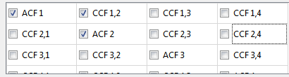

to select a TCSPC file, in this case the file 170E_40pM.t3r, which can be downloaded from http://www.dkfz.de/Macromol/quickfit/examples.html#tcspc. After selecting the file, the window will look like this:
to select a TCSPC file, in this case the file 170E_40pM.t3r, which can be downloaded from http://www.dkfz.de/Macromol/quickfit/examples.html#tcspc. After selecting the file, the window will look like this:

At the rhs of this line, the full duration and an estimate of the countrates in the different input channels is given. In this case, a 600s measurement was acquired and most of the countrate was detected in the first channel (only a blue laser was used for excitation).
- choose the correlator: "bin and correlator: Multi-Tau 1 (one monitor per lag)", as it gives the most accurate results.
- choose to cut the sequence up into 4 segments. Then the full input range (600s) will be cut into four segments of 150s each and each segment will be correlated separately. The resulting four correlation curves are then averaged over and their standard deviation is used as an estimate for the measurement error.
- The minimum lag-time sets the temporal resolution of the FCS curves and of the processes you want to observe. On the other hand, a smaller minimal lag time will result in longer processing times. Typically, a value of 1μs is a good choice. If you want to measure also rotational dynamics and/or do high-accuracy measurements of triplett dynamics, the you might want to choose a value between 100ns and 1μs. Values below 100ns do usually make no sence, since the correlator only uses the macrotime from the TCSPC files, whichhas a resolution around 100ns in many cases.
- For the correlator, use the setings P=16, m=2 and set S to a value, which results in a maximal lag time τmax, which is long enough to cover also slow processes in your sample (for typical FCS/FCCS measurements, τmax=10-20s is a good choice).
- The FCS countrate binning for display should be set to a value between 10ms and 100ms. It specifies the resolution of the countrate curves, displayed for each correlation curve. Since these values are usually only used for visual inspection, the given resolution range is suffuicient. This also save memory and processing time.
- In the following table you can select, which correlation curves to calculate
 The diagonal elements are the autocorrelation curves (ACFs) and the off-diagonal elements are the cross-correlation curves (CCFs). Initially this is automatically configured for 2-color FCCS experiments, using all input channels, which have a significant countrate (see item 2). In this example, the two ACFs "ACF 1" and "ACF 2" are used together with the 2-color cross-correlation fucntion "CCF 1,2". The other curves are not necessary/don't make sence, since there is no input data.
 ), you can click on
to add the results to the project.
), you can click on
to add the results to the project.The project will now contain three RDRs: